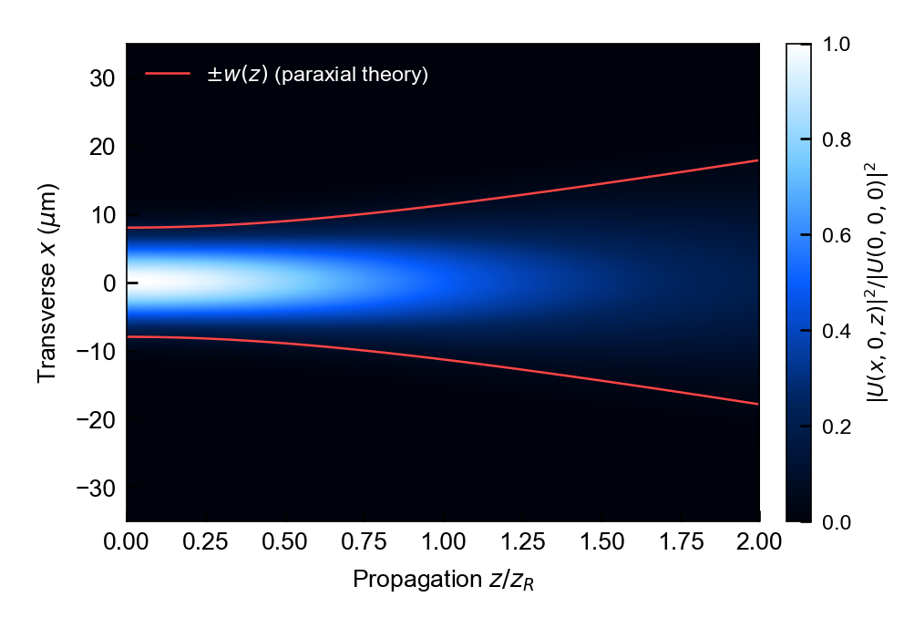
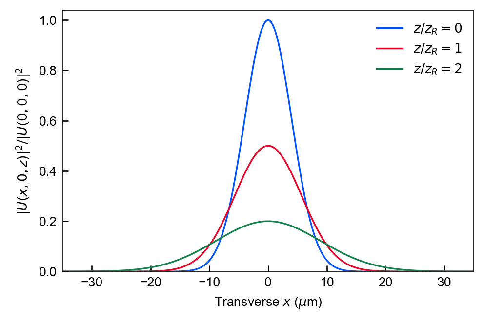
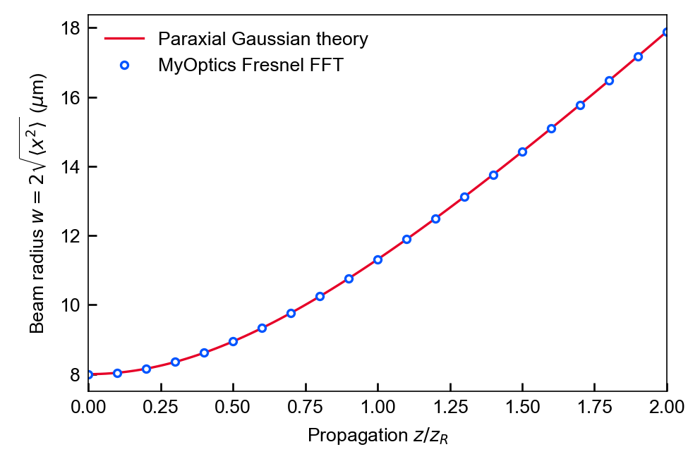

A Gaussian beam, from propagation to checks
A small public demonstration of the existing scalar Fresnel propagator. No material, device or experimental data are used.
English README · 中文 README · Parameters & provenance manifest · Generator source
Symbols, units and evidence
Lengths are in micrometres. The input is U = exp[−(x²+y²)/w₀²], with w₀ = 8 µm and λ = 0.532 µm. zᵣ = πw₀²/λ; propagation spans 0 to 2zᵣ.
Intensity is |U|² divided by the input on-axis intensity, with one common 0–1 color scale. Black → blue → white means increasing intensity. The plotted transverse window is cropped to ±35 µm; computation uses [−64,64) µm.
Red radius curves and the continuous width line are paraxial Gaussian theory. Blue circular markers are computed Fresnel FFT values. Radius w = 2√⟨x²⟩ uses full 2D intensity weights.
Homogeneous scalar monochromatic paraxial model, 512² periodic FFT grid, Δx = Δy = 0.25 µm. Finite-window sampling must be reassessed for other parameters.

Propagation and the expanding beam radius
Computed y = 0 intensity cut; red curves mark ±w(z) from paraxial theory. Peak reduction is retained by the common input normalization.



Intensity profiles
Cuts at z/zᵣ = 0, 1 and 2, normalized to the same input peak.



An analytic check of the numerical radius
Computed second-moment radius agrees with the analytic paraxial model for this grid; the manifest records error and discrete power drift.